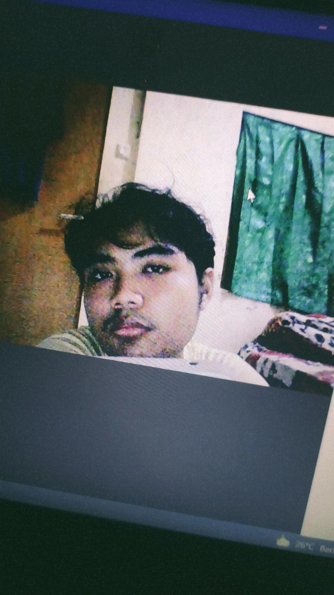

| Yuda iswanto  |
Tentang Saya | personal skill | Academic History |
|---|---|---|---|
| saya adalah mahasiswa Teknik Elektro dari UNIVERSITAS BINA SARANA INFORMATIKA saya tertarik dengan bidang IoT,saya merupakan seorang yang mudah beradaptasi, dapat melakukan kerja secara kelompok maupun individu,mudah bergaul,serta kreatif saya memiliki banyak pengalaman di bidang elektronika industri dan organisasi. Saya suka belajar sembari mendengarkan musik dan juga memiliki hobi memancing. |
|
|